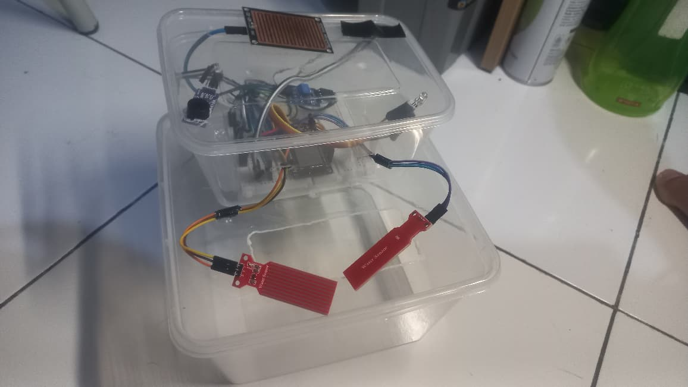

Kembali ke Project

Smart Agricultural Water Level Monitoring
Sistem mitigasi banjir sawah otomatis berbasis IoT untuk mencegah gagal panen akibat cuaca ekstrem. NodeMCU ESP8266 mengintegrasikan Water Level Sensor, Raindrop Sensor YL-83, dan DHT11 (suhu & kelembaban). Data dikirim ke Blynk IoT Cloud untuk pemantauan via smartphone. Alarm lokal: buzzer aktif + LED multi-warna (Hijau = Aman, Kuning = Waspada Hujan, Merah = Bahaya Banjir).
Project Lainnya
Belum ada project pendukung lainnya.